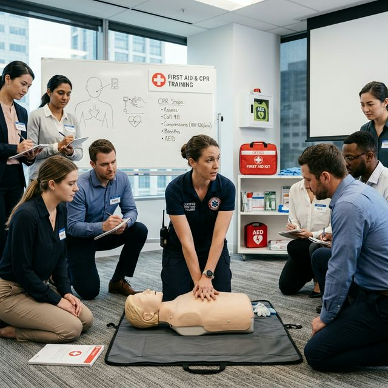
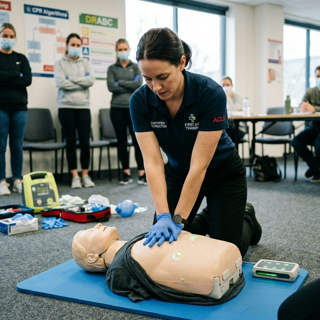

Formations
SECOURISME.
Maîtrisez les gestes d'urgence et la conduite à tenir pour porter secours en toutes circonstances.
Maîtrisez les gestes d'urgence et la conduite à tenir pour porter secours en toutes circonstances.

Formation certifiante pour intervenir efficacement face aux accidents du travail et maîtriser les gestes de secours d'urgence.

Apprenez à reconnaître l'arrêt cardiaque et à utiliser un DAE pour augmenter considérablement les chances de survie.

Actualisez vos connaissances de sauveteur secouriste et prolongez la validité de votre certificat INRS.

Une initiation complète aux gestes qui sauvent pour agir sereinement en attendant l'arrivée des secours.
Nous intervenons directement dans votre établissement ou vous accueillons en centre selon votre programmation.
Demander une session